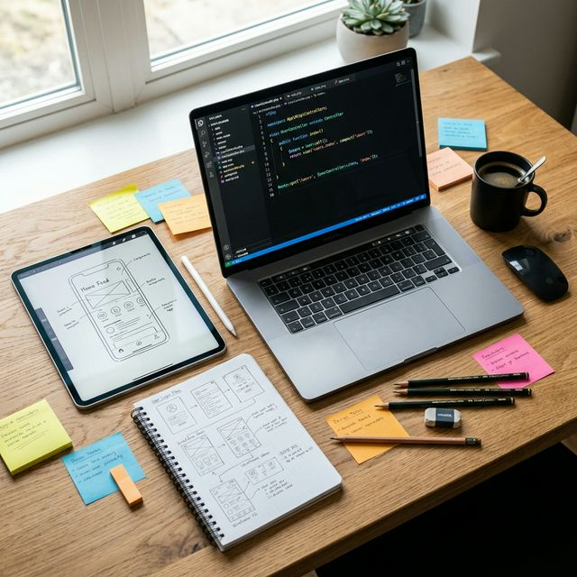

Design Principles & Free Tools for Laravel 13 Development


Developing robust applications in Laravel 13 requires more than just clean backend logic. To deliver an exceptional user experience on both web and mobile, developers must pair Laravel's powerful ecosystem with solid design principles and modern UI/UX tools. Let's explore the core principles and free tools that will elevate your next Laravel 13 project.
1. Core UI/UX Design Principles
Before touching a single tool, understanding fundamental design principles is essential:
- Consistency: Elements like buttons, typography, and spacing should remain uniform across the platform. This reduces the cognitive load for the user.
- Visual Hierarchy: Use size, color, and contrast to guide the user's eye to the most critical information first (e.g., primary calls to action vs. secondary links).
- Accessibility (a11y): Ensure your application is usable by everyone. This means proper ARIA labels, semantic HTML, and adhering to WCAG contrast ratios.
- Mobile-First Approach: Start designing for the smallest screen and progressively enhance the layout for tablets and desktops.
2. Free Tools to Manage Web & Mobile Design
You don't need expensive licenses to create premium designs. The open-source and free-tier ecosystems are incredibly robust right now.
1 Penpot / Figma
While Figma is the industry standard with a generous free tier, Penpot is an excellent open-source alternative. Both allow for vector-based UI design, interactive prototyping, and seamless handoff to developers.
2 Coolors.co
A highly intuitive, free color palette generator. It helps you quickly discover visually pleasing color schemes, export them as CSS variables, and verify their contrast ratios for accessibility.
3 Phosphor Icons
An essential open-source icon family for modern interfaces. Phosphor provides thousands of consistent SVG icons in multiple weights (Regular, Thin, Bold, Fill), perfect for both web and mobile.
4 Google Fonts & Fontsource
Typography sets the tone. Instead of relying on CDN links, tools like Fontsource let you easily install Google Fonts via npm, ensuring optimal loading performance in your Laravel applications.
3. How This Integrates with Laravel 13
Laravel 13 seamlessly bridges the gap between design and implementation. Here’s how these modern design tools pipeline directly into a Laravel architecture:
Translating Designs to Blade Components
The UI/UX artifacts exported from Figma or Penpot map perfectly to Laravel anonymous Blade components. If your design system defines a primary button, a card, and an input field, you create matching `
<!-- resources/views/components/button.blade.php -->
<button {{ $attributes->merge(['class' => 'px-4 py-2 bg-brand text-white rounded-lg hover:bg-brand-dark transition-all']) }}>
{{ $slot }}
</button>Utilizing Tailwind CSS
Laravel's default frontend scaffolding embraces Tailwind CSS. The design tokens you extract from Coolors (e.g., brand colors, neutral palettes) are directly injected into your `tailwind.config.js`. This guarantees that your application visually matches your wireframes perfectly.
Mobile App Integration via API
If you are developing a mobile app (using Flutter, React Native, or NativePHP) alongside your web app, Laravel 13 acts as the ultimate centralized backend.
With Laravel 13, you can build out a robust API using Laravel Sanctum for authentication and API Resources to ensure the response schemas match exactly what your mobile developers need to populate their native UI components. The design language (colors, icons, spacing) remains consistent since both web and mobile clients consume data logically from the same structure, while relying on their shared Figma design system rules.
Summary
A solid Laravel 13 application involves more than just writing beautiful PHP. It requires planning with scalable design principles, utilizing modern tools like Figma and Coolors, and executing tightly through Blade components and clean APIs. By unifying your design process with Laravel's modern workflows, you can rapidly ship web and mobile experiences that look as good as they function.